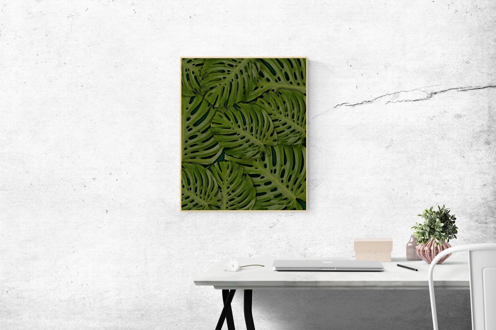
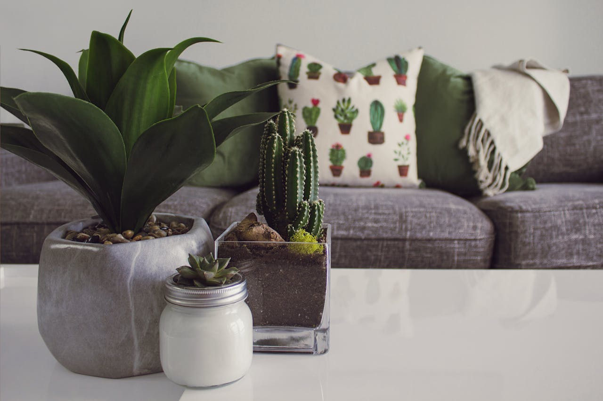

July 23, 2024 | 3 comments
Finding simplicity in life
Life can get complicated really quickly, but it
doesn't have to be! There are many ways to simplify your life,
a few of which we've explored in the past. This
week we're taking a bit of a approach though, in how you can find
simplicity in the life you already living.
Continue reading

July 12, 2024 | 3 comments
Simplicity and work
Work is often a major source of stress. People get frustrated, it
ruins their relationship with others and it leads to burnout. By
keeping your work life as simple as possible, it will help balance
everything out.
Continue reading

July 3, 2024 | 3 comments
Simple decorations
A home isn't a home until you've decorated a little. People either
don't decorate, or they go overboard and it doesn't have the
impact they were hoping for. Staying simple will help draw the eye
where you want it to and make things pop like never before.
Continue reading